When you're *in the mood* to cook something Yummy 😋
🍓💖 Strawberry Smoothie 💖🍓
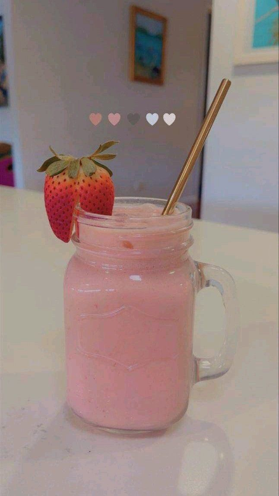
☀️ Perfect for sunny days, mood boosts, and sweet cravings!
🛒 Ingredients:
🍓 1 cup strawberries
🍦 1/2 cup yogurt
🥛 1/2 cup milk (dairy or plant)
🍯 1 tbsp honey or sugar
❄️ 3–4 ice cubes
✨ Optional:
🍌 Banana, chia, protein powder, vanilla
🌀 Blend Like a Boss:
1. Wash strawberries.
2. Blend all ingredients.
3. Adjust sweetness.
4. Pour & enjoy!
🍫💣 Choco Bombs 💣🍫
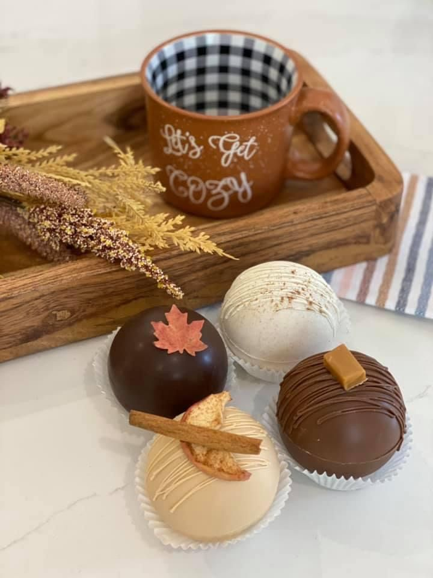
🛒 Ingredients:
🌾 1 cup maida
🥄 2 tbsp sugar
🥛 1/2 cup milk
🧂 Pinch of salt
🍫 Chocolate pieces
🧈 For greasing
🍌 Optional: banana or cocoa
👩🍳 Steps:
1. Make batter (idli consistency).
2. Grease & fill appam stand.
3. Insert chocolate, cover with batter.
4. Flip & cook both sides till golden.
5. Serve with sugar or syrup 🍬
🌶️🔥 Korean Paneer 🔥🌶️
🧀 Crispy Paneer:
Paneer + cornflour + maida + water + salt/pepper
🌶️ Korean Sauce:
Garlic, ketchup, chilli, soy, vinegar, sugar, gochujang
👩🍳 Steps:
1. Fry paneer cubes.
2. Sauté garlic + add sauces.
3. Toss paneer in sauce.
4. Garnish with spring onions 🌱
🍞🎉 Bread Pizza Bites 🎉🍞
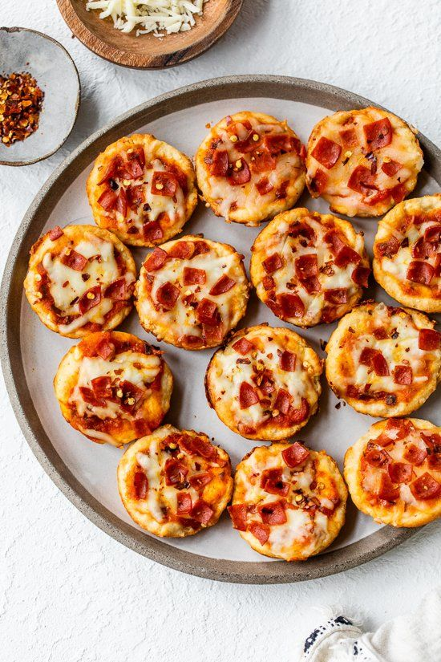
🛒 Ingredients:
🍞 Bread, onion, capsicum, cheese, ketchup/sauce
🧂 Salt, pepper, chilli flakes, oregano
🧈 Butter/oil
👩🍳 Make it:
1. Cut bread into small squares
2. Spread sauce, add veggies
3. Sprinkle cheese & masalas
4. Toast on tawa covered till cheese melts
🌈 Serve:
With ketchup/chutney, poke with toothpicks 😍
🌸 Skincare Rituals for Glow Days 🌸
Self-care isn’t selfish—it’s glow-up science ✨
Ready to pamper yourself?
Let’s walk through the perfect at-home spa routine:
💆♀️ Spa Day
💅 Manicure & Pedicure
🧖♀️ Facials & Face Masks
🍵 Herbal Teas for Glowing Skin
Put on your robe and let’s begin 🛁🌷
🛁 Spa Day Vibes
🕯️ Light some candles
🎵 Play calming music
🌸 Add a few drops of essential oil to hot water
✨ Mini Ritual:
1. Steam face with a towel tent (5–7 mins)
2. Apply a clay or detox mask
3. Cucumber on eyes = yes, queen 👑
Wrap up in your fluffiest towel. Hydrate inside & out 💧
💅 Mani-Pedi Magic
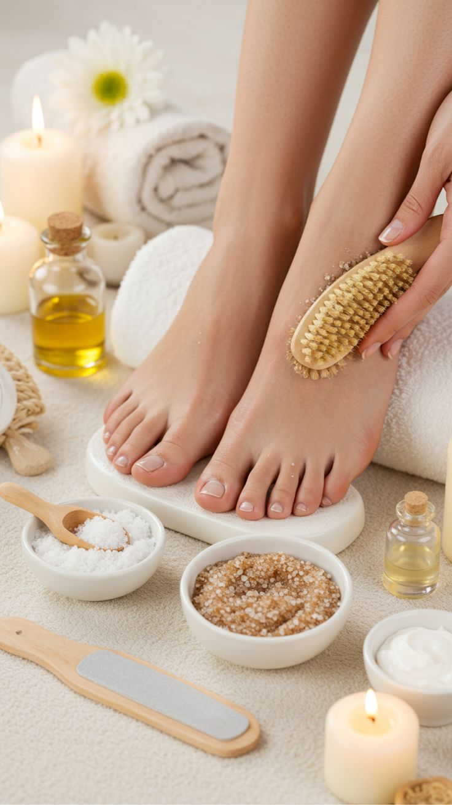
🧼 Soak hands & feet in warm water with rose petals + salt
🪮 File, buff & push cuticles gently
🧴 Massage with lotion or coconut oil
💖 Paint your nails (or go natural & shiny!)
✨ Self-touch matters—treat your hands and feet like royalty 👣
🧖♀️ Facial & Mask Time
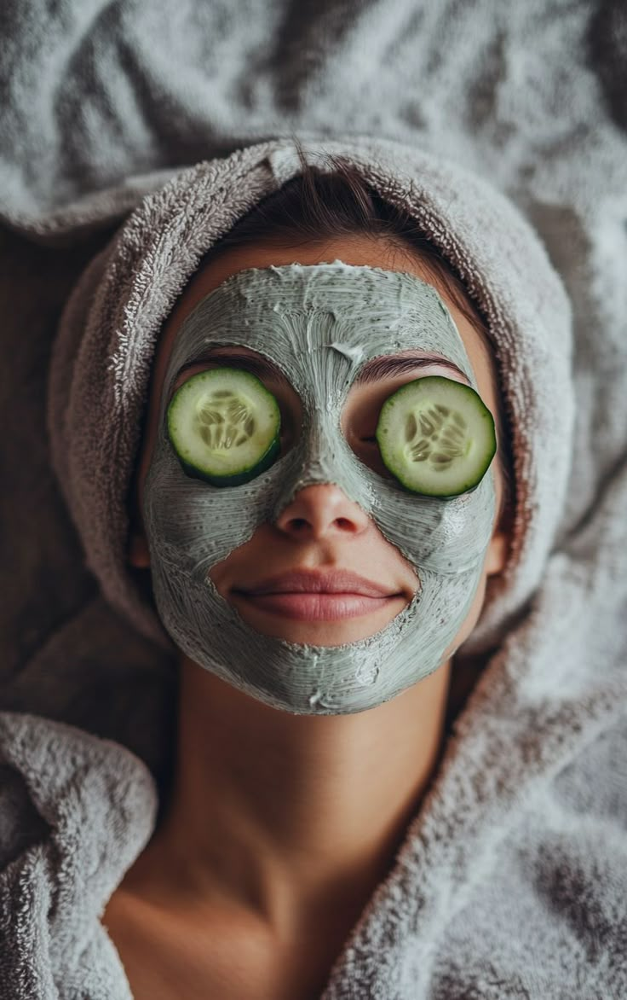
✨ Basic Glow Routine:
1. Cleanse with gentle face wash
2. Scrub gently (2–3 mins max)
3. Apply mask:
🍯 Honey + turmeric
🥒 Cucumber puree
🍵 Green tea + aloe vera
Leave it on, sip your tea, scroll Pinterest 💖
Wash off → tone → moisturize → feel the glow 🌈
🍵 Herbal Teas for Skin
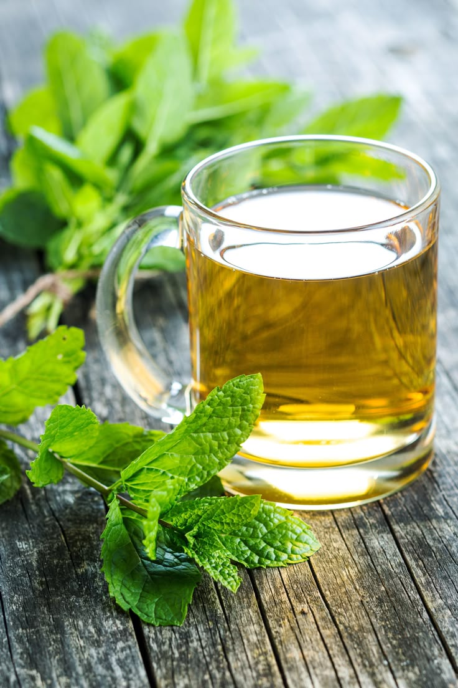
Hydration = your inner skincare routine 💧
🌿 Glowy Tea Ideas:
🌼 Chamomile: calms skin & soul
🌱 Green tea: antioxidant hero
🍋 Lemon + mint: digestion & detox
Sip slowly. Smile deeply. Glow naturally 🌞
Repeat this ritual every week for that lit-from-within skin ✨
 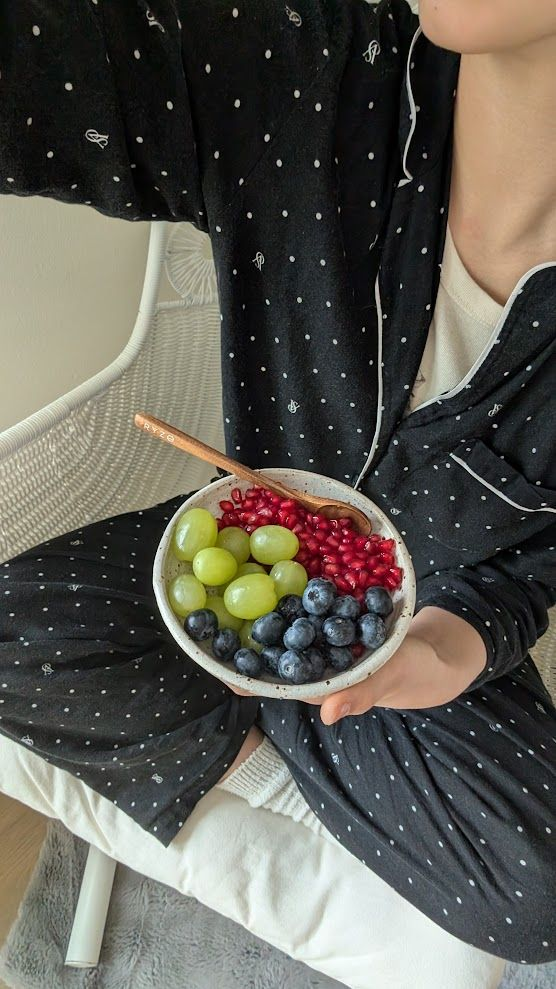
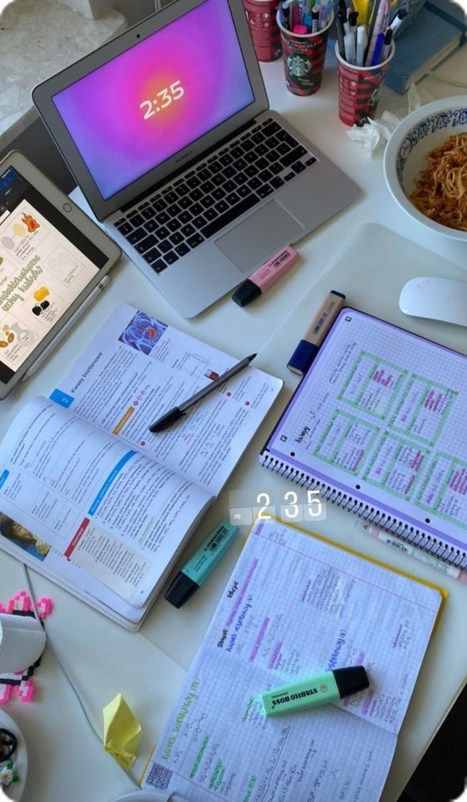
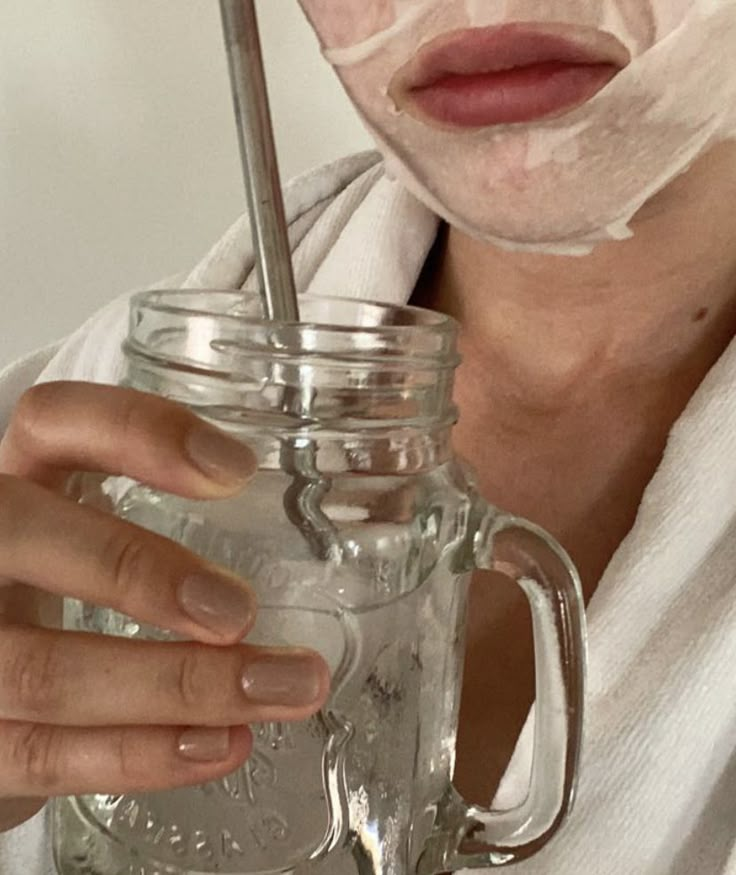
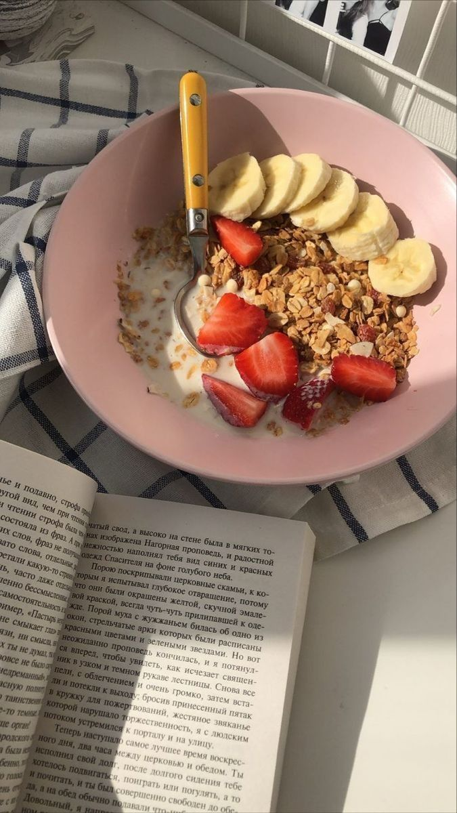
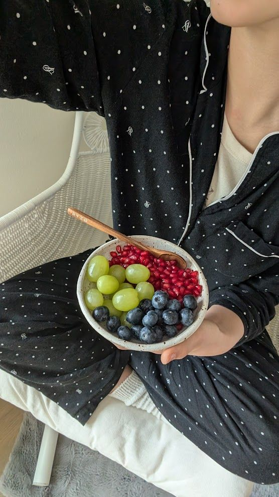
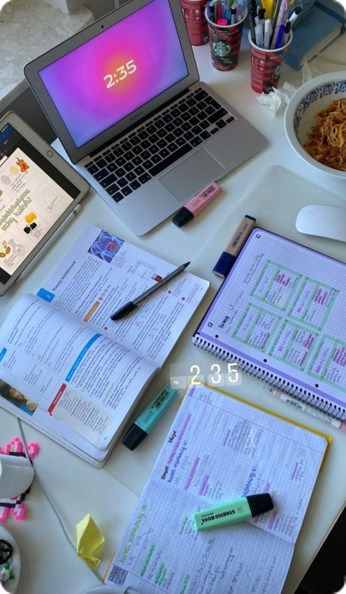
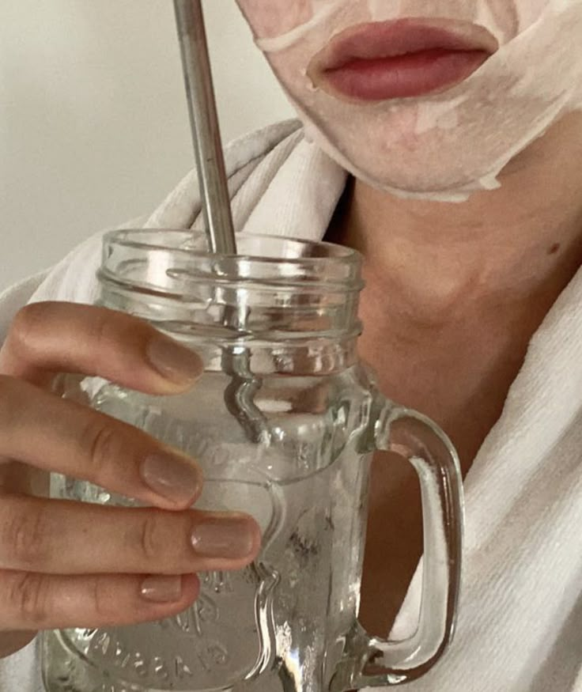
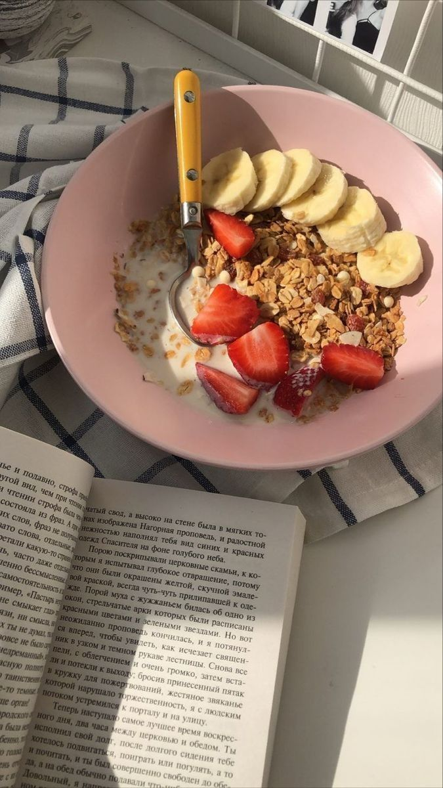